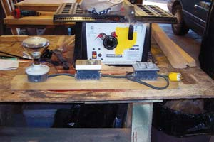
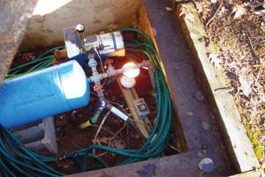

I built this well-house heater for myself and also made some for friends. Mounted on the 2-by-6 are a ceramic light fixture, a thermostat and a GFI (ground fault interrupter) receptacle. This setup is attached to a 20-amp breaker. I use an exterior light bulb for heat, but you could also use a small electric heater in extremely cold conditions. The thermostat is set to switch the heat on when the temperature in the well house falls to 40 degrees Fahrenheit.
The receptacle also can be used for a trouble light or to plug in heat tape. It works well for me.
|
 MICHAEL MCCASEY The well house heater array: light bulb, thermostat and ground fault interrupter. |
 MICHAEL MCCASEY A light bulb run by a thermostat keeps the well house from freezing. |
|